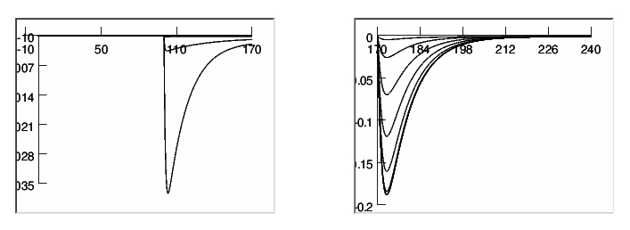

<pre>
This is the readme for the model files associated with the paper:

Baranauskas G,Martina M (2006) Sodium Currents Activate without a
Hodgkin and Huxley- Type Delay in Central Mammalian Neurons
J. Neurosci. 26(2):671-684

Abstract:
Hodgkin and Huxley established that sodium currents in the squid giant
axons activate after a delay, which is explained by the model of a
channel with three identical independent gates that all have to open
before the channel can pass current (the HH model). It is assumed that
this model can adequately describe the sodium current activation time
course in all mammalian central neurons, although there is no
experimental evidence to support such a conjecture. We performed high
temporal resolution studies of sodium currents gating in three types
of central neurons. The results show that, within the tested voltage
range from -55 to -35 mV, in all of these neurons, the activation time
course of the current could be fit, after a brief delay, with a
monoexponential function. The duration of delay from the start of the
voltage command to the start of the extrapolated monoexponential fit
was much smaller than predicted by the HH model. For example, in
prefrontal cortex pyramidal neurons, at -46 mV and 12 degrees C, the
observed average delay was 140 micros versus the 740 micros predicted
by the two-gate HH model and the 1180 micros predicted by the
three-gate HH model. These results can be explained by a model with
two closed states and one open state. In this model, the transition
between two closed states is approximately five times faster than the
transition between the second closed state and the open state. This
model captures all major properties of the sodium current
activation. In addition, the proposed model reproduces the observed
action potential shape more accurately than the traditional HH model.

---
The model files were supplied by
Gytis Baranauskas &lt;baranauskas@elet.polimi.it&gt;

A demo is provided that produces the voltage clamp currents for the
6-state Na channel with the protocol from figure 5C.



To run the model:  simply auto-launch from ModelDB (after
NEURON is installed) or

download and expand the archive.  Compile the mod files by
running nrnivmodl (unix) or mknrndll (mswin), or (mac) drag the 
na2006 folder onto the mknrndll icon in the NEURON application 
folder. 

Start the simulation by double clicking on mosinit.hoc (mswin)
or typing "nrngui mosinit.hoc" (unix), or dragging either the
mosinit.hoc or the vc_demo.hoc file to the nrngui (mac) icon in
the NEURON application folder.

Additional notes from Gytis Baranauskas:

The A-type current and slow outward potassium current were 
taken from NEURON ModelDB database, Migliore model based 
on Sakmann & Korngreen paper, the only modifications were 
shift by +4 mV of voltage dependence of kslow that made 
easier selection of the parameters.

Included are two additional model files kdersej and nachansej 
that were used during current clamp simulations. They are 
based on the published model of Mainen, ZF, J Joerges, et 
al. (1995) A model of spike initiation in neocortical 
pyramidal neurons. Neuron 15(6): 1427-39.

The remaining data (current densities, current injection 
parameters, modifications of pyramidal demo model soma 
size, temperature) were inserted manually in the Demo mode 
of the NEURON employing the provided GUI, for me it was 
the easiest way.

Note: this version contains temperature dependence in all the
channels.
</pre>
